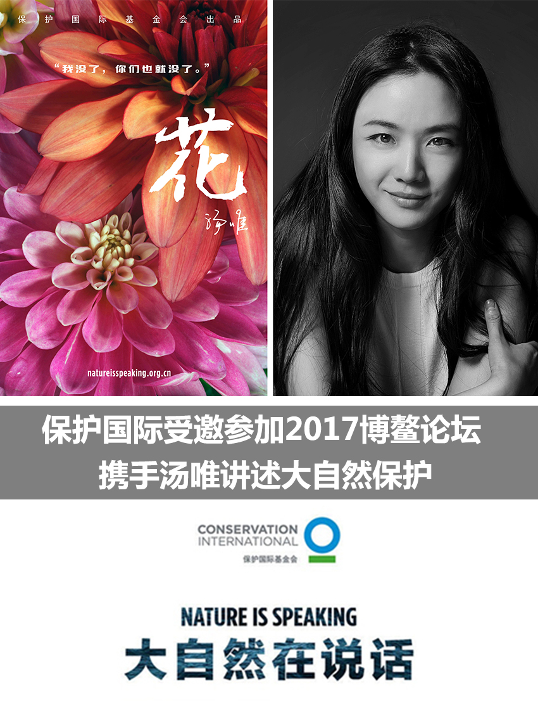
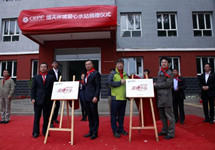
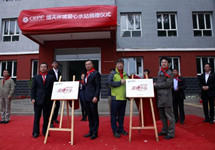

公益导向
子研论道：公益慈善要精准扶贫
公益慈善事业要有全局意识，精准扶贫是全面建成小康社会关系国家发展的大局。
马庆钰：非公募基金会的三个困境
虽然非公募基金会整体发展呈较为良好的上升趋势，也要承认其遇到的问题。
公益慈善事业要有全局意识，精准扶贫是全面建成小康社会关系国家发展的大局。
虽然非公募基金会整体发展呈较为良好的上升趋势，也要承认其遇到的问题。
强生是一个开放的公司，希望帮助有创造力的青年人实现他们的梦想。……
百事把温暖和快乐带给贫困地区的母亲们，让“有爱就是一家人”成为17中国新年的温馨愿望。……
| 公益机构： | 联合国儿童基金会 中国宋庆龄基金会 中国儿童少年基金会 中国思源工程扶贫基金会 世界卫生组织 PETA亚洲善待动物组织 宝贝回家 首都献血 |
| 推荐项目： | 儿童保护 让候鸟飞 免费午餐 大爱清尘 随手街头救助 微博打拐 暖流计划 爱心衣橱 919大病救助工程 |
| 合作伙伴： | 佳能影像公益 为爱上色中国 共益巷 问卷网 爱佑慈善基金会 |
| 合作媒体： | 公益时报 CCTV等着我 《善行天下》 公益中国网 善达网 中国慈善家 |
| 媒体平台： | 公益资讯 绿色生活 影像公益 社会责任 新浪环保 |
| 公益平台： | 微公益 品牌项目 公益话题榜 中国公益指数 |
 
